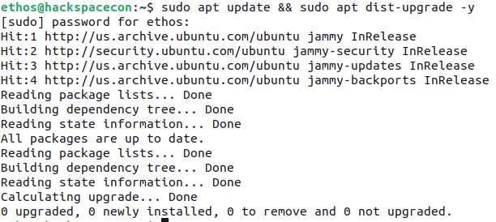
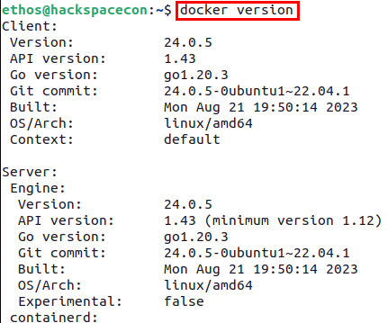
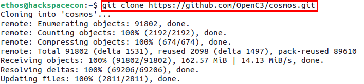
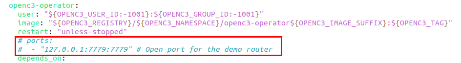
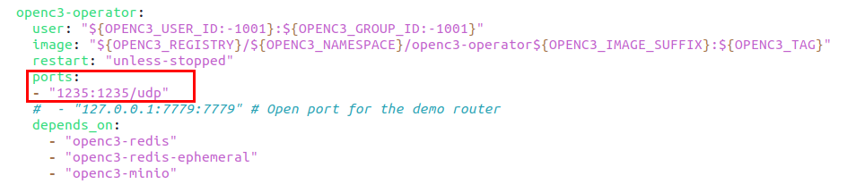
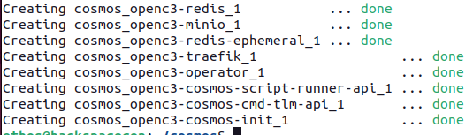
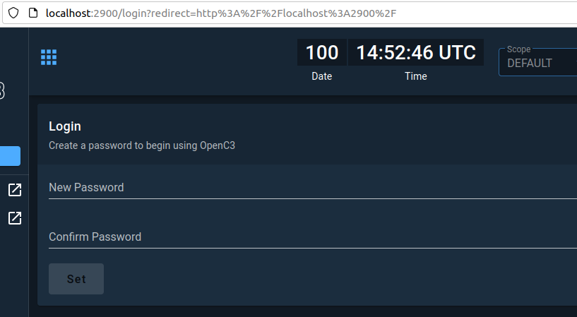
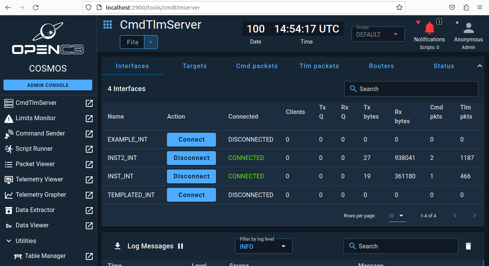

OpenC3 Cosmos

Log out and Log back in...
open terminal and run: docker version


Line 161
openc3-operator:
user: "${OPENC3_USER_ID:-1001}:${OPENC3_GROUP_ID:-1001}"
image: "${OPENC3_REGISTRY}/${OPENC3_NAMESPACE}/openc3-operator${OPENC3_IMAGE_SUFFIX}:${OPENC3_TAG}"
restart: "unless-stopped"
# ports:
# - "127.0.0.1:7779:7779" # Open port for the demo router
depends_on:

openc3-operator:
user: "${OPENC3_USER_ID:-1001}:${OPENC3_GROUP_ID:-1001}"
image: "${OPENC3_REGISTRY}/${OPENC3_NAMESPACE}/openc3-operator${OPENC3_IMAGE_SUFFIX}:${OPENC3_TAG}"
restart: "unless-stopped"
ports:
- "1235:1235/udp"
# - "127.0.0.1:7779:7779" # Open port for the demo router
depends_on:

CRTL + x, then y to save.


docekr ps

localhost:2900
You will be prompted to set a password. Feel free to chose any password you would like. Just make sure to remember it.

After getting logged in...

In this lab, you will be deploying OpenC3 COSMOS to act as both your mission control center and ground station and then learning about some of its capabilities.

To get started, you need to open a terminal and navigate to the ~/ICSS-2024.03/Cosmos directory and then executing the ```./openc3.sh script using the commands down below:

In a browser, navigate to http://localhost:2900 and if prompted for a password, choose a password of your choice. If you are not prompted to choose a password, try password.


Getting the lay of the land
Now that you have logged into COSMOS, it is time to get familiar with it and what it is capable of doing.
On the left side of the screen, you will find the primary navigation menu as shown below:

In the main section of your window you will the CmdTlmServer interface that has a row of options called Interfaces,Tagrets,Cmd packets,Tlm packets,Routers, and Status.

The current deployment of COSMOS includes a demonstration plugin that has four interfaces, two of which will have a status of Connected.

If you see that the packet counts for both Cmd pkts and Tlm pkts increasing, everyhing is working as expected and data is coming in and from your COSMOS instance. YOu can also look below the CmdTlmServer window to the Log Messages console as shown below to see that data is flowing.

!!! Notice !!!
The rest of this lab is going to be instructor led to showcase some of the abilities of COSMOS. If you are not doing the labs live, each of the steps needed in future labs will be clearly defined, so you will be able to follow along at that time, but you are encouraged to follow along with the video of this portion of the class.